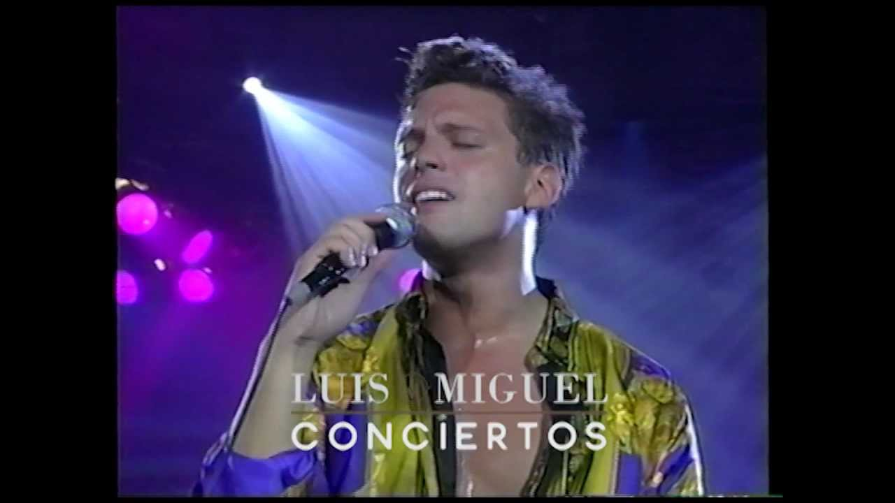

Inolvidable
Inolvidable

En la vida hay amores que nunca
Pueden olvidarse
Imborrables momentos que siempre
Guarda el corazón
Pero aquello que un día nos hizo
Temblar de alegría
Es mentira que hoy pueda olvidarse
Con un nuevo amor
He besado otras bocas buscando
Nuevas ansiedades
Y otros brazos extraños me estrechan
Llenos de emoción
Pero solo consiguen hacerme
Recordar los tuyos
Que inolvidablemente vivirán en mí
Pero aquello que un día nos hizo
Temblar de alegría
Es mentira que hoy pueda olvidarse
Con un nuevo amor
He besado otras bocas buscando
Nuevas ansiedades
Y otros brazos extraños me estrechan
Llenos de emoción
Pero solo consiguen hacerme
Recordar los tuyos
Que inolvidablemente vivirán en mí
Que inolvidablemente vivirán en mí